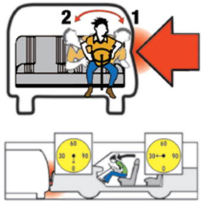

Protect Yourself and Your Passengers
Seat Belts
You and your passengers must wear seat belts. You can get a ticket if you do not. If your passenger is under 16 years old, you can also get a ticket if they are not wearing their seat belt.
Wearing the lap belt and shoulder harness of a seat belt will increase your chance of survival in most types of collisions. This image shows what can happen in a collision.
When you are in a collision, your vehicle stops. But you keep moving at the same speed you were traveling. You only stop when you hit the dashboard or windshield. If you are struck from the side, the impact could push you back and forth across the seat. Seat and shoulder belts keep you in a better position to control the vehicle. They may also minimize serious injuries.
It is important to wear the seat belt correctly to avoid injury or death:
- Wear the shoulder harness across your shoulder and chest. There should be little to no slack. Do not wear the shoulder belt under your arm or behind your back.
- Adjust the lap belt so that it is snug and lies low across your hips. Otherwise you might slide out of the belt in a crash.
- If you are pregnant, wear the lap belt as low as possible under your abdomen. Place the shoulder strap between your breasts and to the side of your abdomen’s bulge.

IMPACT – If the red arrow were another car hitting your car on the driver’s side:
- You would first be thrown against the driver’s side door,
- Then you would “rebound” and be thrown toward the passenger’s side door.
Child Restraint System and Safety Seats
You must secure children with a federally-approved child passenger restraint system or safety belt. The requirements depend on the child’s height and age.
- Children who are under 2 years old, under 40 pounds, and under 3 feet 4 inches tall: Secure in a rear-facing child passenger restraint system.
Note A child in a rear-facing child passenger restraint system may not ride in the front seat of an airbag-equipped vehicle.
-
Children who are under 8 years old, or who are less than 4 feet 9 inches tall: Secure in a child passenger restraint system in a rear seat. In some cases, children under 8 years old may ride in the front seat of a vehicle in a federally-approved child passenger restraint system. They may ride in the front seat if:
- There is no rear seat.
- The rear seats are side-facing jump seats.
- The rear seats are rear-facing seats.
- The child passenger restraint system cannot be installed properly in the rear seat.
- All rear seats are already occupied by children 7 years old or younger.
- Medical reasons prevent the child from riding in the back seat.
- Children who are 8 years old or older, or at least 4 feet 9 inches tall: May use a properly secured safety belt that meets federal standards.
Your local law enforcement agency or fire department can check the installation of your child passenger restraint system. As your child grows, check that the child passenger restraint system is the right size.
Air Bags
Air bags are a valuable safety feature on many vehicles. They can help keep you safer than a seat belt alone.
Ride at least 10 inches from the airbag cover, as long as you can maintain full control of your vehicle. Measure from the center of the steering wheel to your breastbone. Contact your vehicle dealer or manufacturer if you cannot safely sit 10 inches away from the air bag. They may have advice about additional ways to move back from your air bag. Passengers should also sit at least 10 inches away from the passenger-side air bag.
Note Children seated next to a side air bag may be at risk of serious or fatal injury.
Unattended Children and Pets
It is illegal to leave a child who is six years old or younger unattended in a vehicle. A child may be left under the supervision of a person who is at least 12 years old.
It is dangerous and illegal to leave children or animals in a hot vehicle. The temperature inside a parked vehicle can rise rapidly when it is sitting in the sun. This is true even if a window is left slightly open. Too much exposure to heat can lead to dehydration, heat stroke, and death.